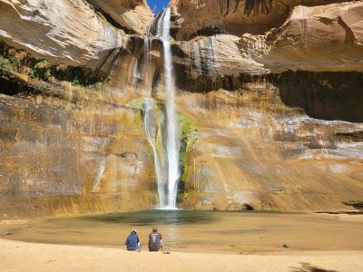
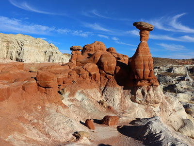
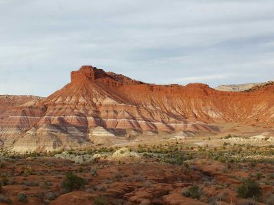
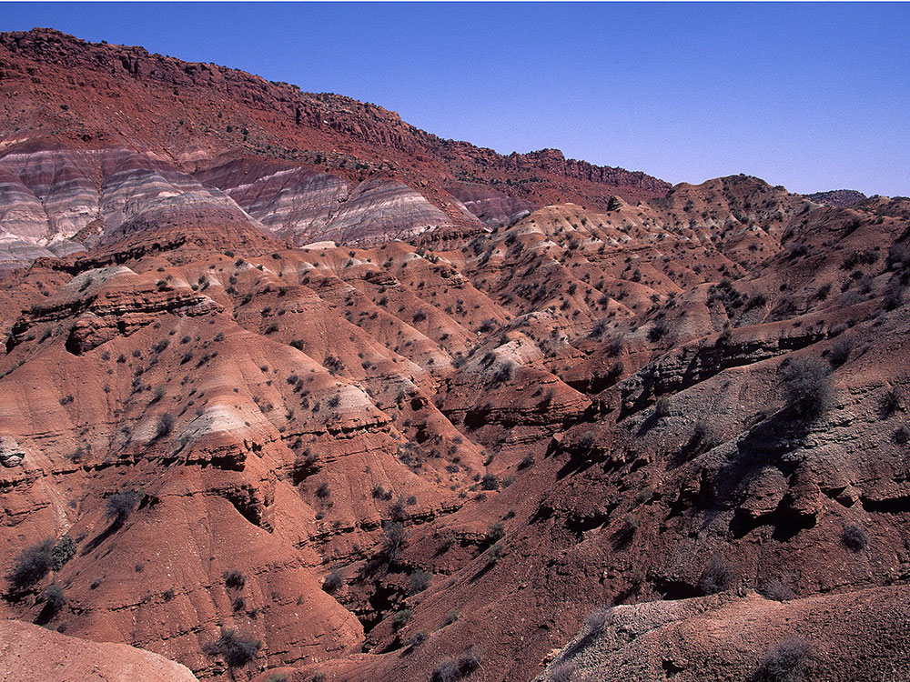
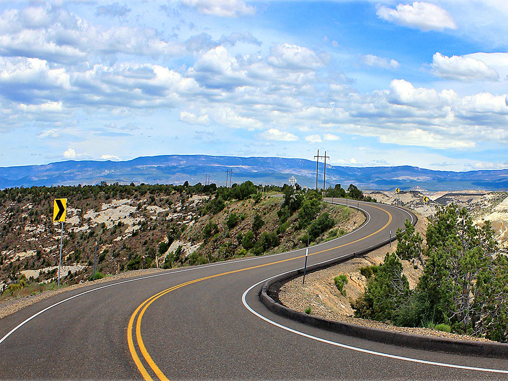
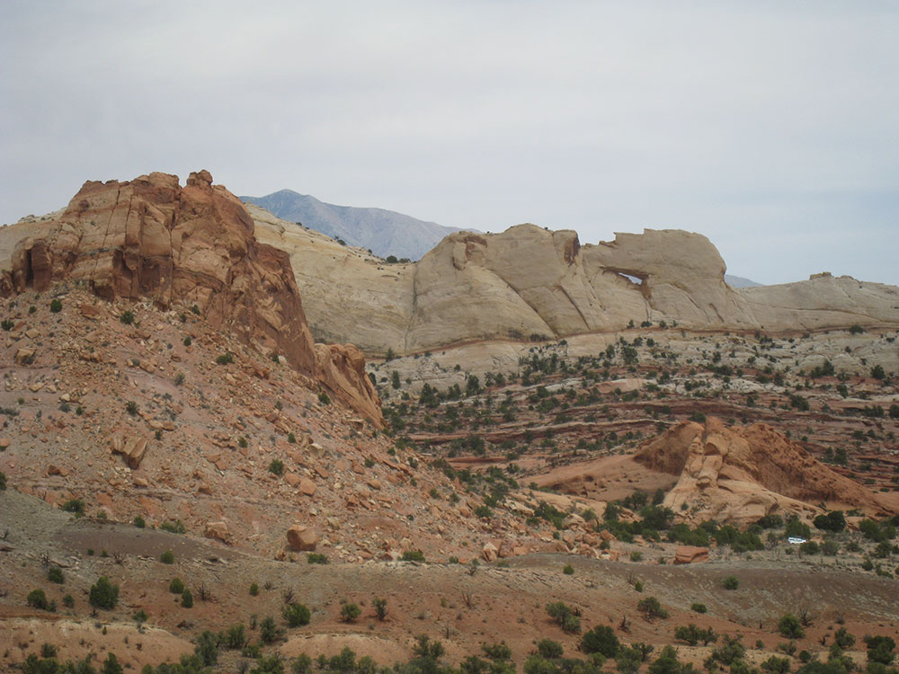
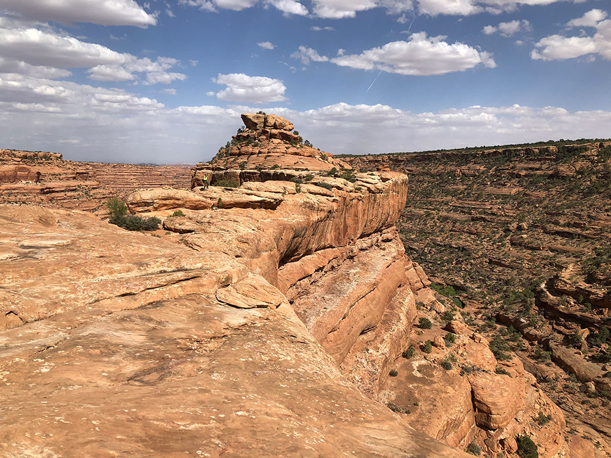
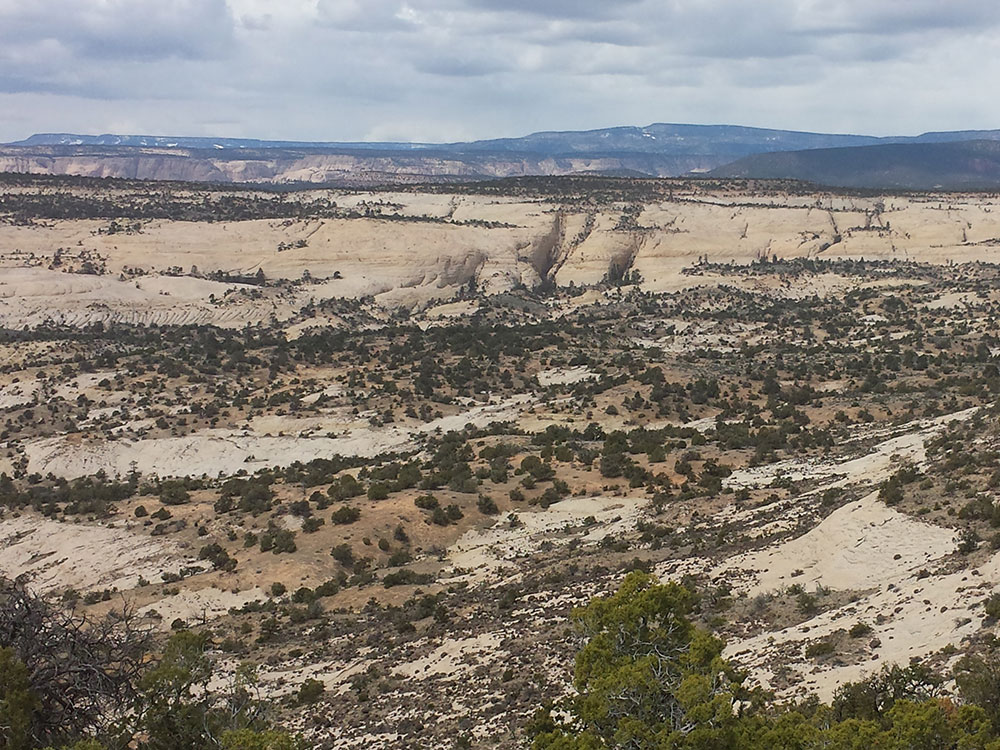
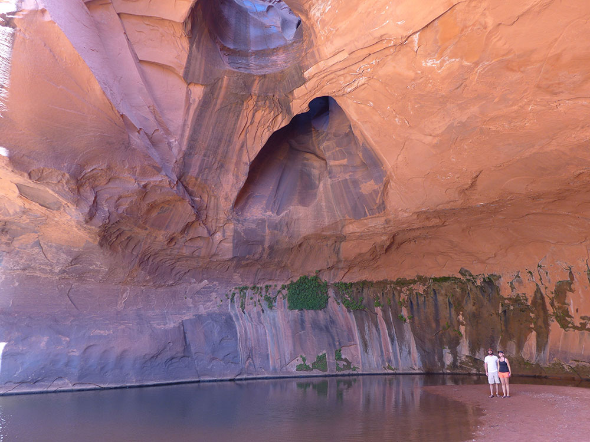

National monument with 1,880,461 acres (7,610 km2) of protected land in southern Utah is among the most remote in the country and the last to be mapped in the contiguous United States
General Information
How to Get There
From Page, AZ (174 mi): Take US-89 N for about 110 miles, then turn onto N Johnson Canyon Rd and follow UT-12 E to Escalante; continue to Pine Creek Ln to reach the monument.
Overview
Grand Staircase-Escalante National Monument covers nearly 1.9 million acres of southern Utah, a huge, wild landscape of colorful canyons, sandstone cliffs, slot canyons, and arches, where you can go for days without seeing anyone. President Clinton created it under the Antiquities Act in 1996, and it was the last place in the lower 48 to be mapped. It is managed by the Bureau of Land Management rather than the National Park Service, and is divided into three regions: the Grand Staircase in the west, the Kaiparowits Plateau in the center, and the Canyons of the Escalante in the east. Visitors come for slot-canyon hikes, waterfalls, long backcountry drives, backpacking and some of the darkest skies and quietest country in the Southwest. The monument’s boundaries have changed several times, and a presidential proclamation in July 2026 again reduced it substantially, so check the BLM website for the current boundaries and management before you go.
Access
The monument spans a remote stretch of southern Utah between Bryce Canyon National Park and Lake Powell, and two paved routes reach it: US-89 along the south and Scenic Byway Highway 12 along the north. Most visitors base themselves in Escalante or Boulder on Highway 12, which gives paved access to Calf Creek and to the dirt roads that lead south, including Hole-in-the-Rock Road, the Burr Trail and Cottonwood Canyon Road. Nearly all roads inside the monument are unpaved, and many become impassable when wet, so check conditions at a visitor center and match the route to your vehicle. There is no public transportation, cell service is spotty and fuel and supplies are scarce away from the main towns. Carry extra water, food and a full tank, and stay on existing roads, since driving off-road is prohibited.
Seasons
Spring and fall are the best times to visit, with mild temperatures for hiking and fewer thunderstorms than summer. Summer is hot in the canyons, and the July to September monsoon brings afternoon storms and flash-flood danger in slot canyons, plus muddy, impassable dirt roads. Winter is cold with occasional snow at higher elevations, and some of the unpaved roads and trailheads can be hard to reach, but the crowds are thin and the main roads are usually passable. Slot canyons are best entered only when the forecast is dry, in any season. Visitor centers keep reduced hours in winter, so confirm opening times before you go.
Highlights
- Lower Calf Creek Falls: a 126-foot waterfall on a 6-mile hike
- Slot canyons: Peek-a-boo, Spooky, and Coyote Gulch, mostly reached by dirt roads
- Cottonwood Canyon Road and the Paria Townsite
- Base town: Escalante, with the Escalante Interagency Visitor Center, and Highway 12 to Boulder
Things to Do
Discover Slot Canyons and Unique Rock Formations
The monument is famous for its intricate slot canyons, including Peek-a-Boo Gulch and Spooky Gulch, where visitors can navigate narrow sandstone corridors sculpted by water and time. Towering cliffs, natural arches, hoodoos, and colorful badlands create a landscape unlike anywhere else in the country.
Drive Scenic Backcountry Roads
Several scenic routes traverse the monument, including the renowned Hole-in-the-Rock Road and the Burr Trail. These roads provide access to remote viewpoints, hiking destinations, historic sites, and striking geological formations while showcasing the monument's vast desert scenery.
Visit Escalante Petrified Forest State Park
Located near the monument, Escalante Petrified Forest State Park features colorful petrified wood deposits, hiking trails, and reservoirs. Visitors can learn about the region's prehistoric past while enjoying beautiful views of the surrounding desert landscape.
Explore Ancient History and Paleontology
Grand Staircase-Escalante contains numerous archaeological sites, historic pioneer routes, and one of the richest dinosaur fossil regions in North America. Researchers continue to make important paleontological discoveries throughout the monument, contributing to our understanding of prehistoric life.
Top Trails
Lower Calf Creek Falls Trail
Length: Approximately 6 miles round trip
Elevation Gain: Approximately 550 feet
Difficulty: Moderate
One of the monument's most popular hikes, this trail follows Calf Creek through a scenic canyon to a spectacular 126-foot waterfall. The route passes ancient pictographs, sandstone cliffs, and desert vegetation before reaching a cool oasis beneath the falls.
Peek-a-Boo Gulch and Spooky Gulch Loop
Length: Approximately 4 miles loop
Elevation Gain: Moderate
Difficulty: Moderate to Strenuous
This adventurous route explores two of the monument's most famous slot canyons. Visitors encounter narrow passages, sandstone walls, and unique geological formations while navigating an unforgettable desert landscape.
Devil's Garden Trail
Length: Approximately 1 to 2 miles
Elevation Gain: Minimal
Difficulty: Easy
Located along Hole-in-the-Rock Road, Devil's Garden features an incredible collection of hoodoos, arches, and sculpted sandstone formations. The area is ideal for photography, exploration, and family-friendly sightseeing.
Golden Cathedral Trail
Length: Approximately 9 miles round trip
Elevation Gain: Moderate
Difficulty: Strenuous
This challenging hike leads through the scenic Escalante River region to the Golden Cathedral, a stunning sandstone chamber illuminated by sunlight streaming through openings in the canyon roof. The route includes creek crossings and some of the monument's most impressive scenery.
Visitor Centers
The monument is served by several BLM visitor centers in the gateway towns. The Escalante Interagency Visitor Center on Highway 12 is the main stop for the Escalante canyons, Hole-in-the-Rock Road and the Burr Trail, while the Cannonville, Kanab and Big Water visitor centers cover the Grand Staircase and Kaiparowits areas, and the Paria Contact Station operates seasonally on Highway 89. Staff provide maps, road and weather updates, permits and hiking advice. Hours vary by center and season, with reduced schedules and closed days in winter, so check the BLM website or call (435) 644-1200 before you rely on a particular center.
Camping and Lodging
There is no lodging inside the monument, but camping is available. Calf Creek Campground at the trailhead for Lower Calf Creek Falls and Deer Creek Campground near Boulder are first-come, first-served BLM sites, and dispersed camping is allowed in much of the backcountry with a free overnight permit from a visitor center or trailhead. Kodachrome Basin State Park and Escalante Petrified Forest State Park, just outside the monument, also have campgrounds. For motels, inns and cabins, the closest towns are Escalante and Boulder on Highway 12, with Tropic and Cannonville to the west near Bryce Canyon, Torrey about 1.5 hours northeast, and Kanab and Big Water to the south.
This article uses material from the Wikipedia article and official pages for blm.gov, visitutah.com, Grand Staircase-Escalante National Monument, released under the Creative Commons Attribution-Share-Alike License 3.0. Additional information from Bureau of Land Management.
Featured Locations and Trails
-400.jpg)
Greg Willis from Denver, CO, usa, CC BY-SA 2.0, via Wikimedia Commons;Image Size Adjusted
.jpg){kind=link}
Cottonwood Canyon Road
Scenic 47-mile dirt road in Utah that connects U.S. Route 89 (US-89) with South Kodachrome Road and traverses portions of Grand Staircase-Escalante National Monument offering a unique view into the heart of the Monument

Lower Calf Creek Falls, Utah
Lower Calf Creek Falls
Desert waterfall cascading 126 feet into a shaded pool, reached by a scenic canyon trail with pictographs and stream crossings.

Jeffhollett, CC BY-SA 4.0, via Wikimedia Commons; Image Size Adjusted

Paria Rimrocks / Toadstool Hoodoos
Jeffhollett, CC BY-SA 4.0, via Wikimedia Commons; Image Size Adjusted
Paria Rimrocks / Toadstool Hoodoos
Cluster of naturally sculpted rock spires resembling mushrooms, formed by erosion of layered sandstone over millions of years.

Jeffhollett, CC BY-SA 4.0, via Wikimedia Commons; Image Size Adjusted
Paria Townsite
Ghost town on the Paria River in Grand Staircase-Escalante National Monument that was inhabited from 1870 to 1929, and later used as a filming location.

John Fowler from Placitas, NM, USA, CC BY 2.0, via Wikimedia Commons; Image Size Adjusted
.jpg){kind=link}
Wahweap Hoodoos
Towering white sandstone spires capped with dark boulders, sculpted by erosion into surreal formations in a remote desert wash.





.jpg){kind=link}

.jpg){kind=link}

